| Name | Rarity | Description | Cooldown(Seconds) | Damage(melee/ranged damage) | Notes |
|---|---|---|---|---|---|
| Battleaxe Dance | Epic | 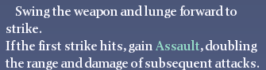 | ? | Decent singlehit of damage(melee) | Assault: 5 second buff that boosts range and damage on hit. |
| Moonrend | Legendary | 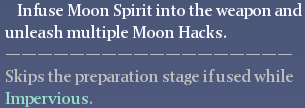 | ? | Multiple hits of good damage with close range AOE(melee) | |
| Ice Whisper | Legendary | 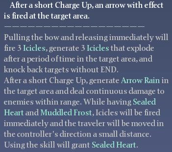 | 10 | (Ranged) | Not as good as default skills of bow(Bow Exclusive) |
| Skyfall | Epic | ? | (Ranged) | ||
| Royal Tempest | Epic | 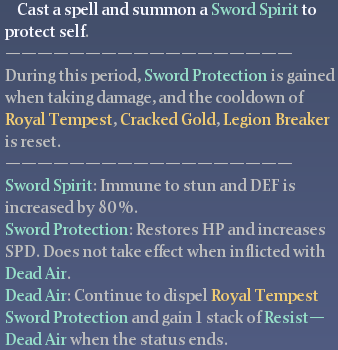 | 8 | ||
| Immense Power | Epic | 8 | Fires 3 Fanlike blades with average damage each projectile(Ranged) | ||
| Stampede | Epic | 6 | Slower attack speed compared to Moonrend(Melee) | ||
| Fire Ring | Epic | 10 | (Ranged) | (Random Default Staff Ability) | |
| Flowing Pill | Epic | 12 | (Ranged) | (Random Default Staff Ability) | |
| Battering | Epic | ? | (Melee) | ||
| Inferno Strike | Epic | 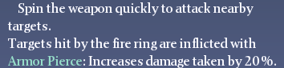 | 8 | Close range strike with weapon with very little damage(Melee) | Armor Piece debuff lasts longer than cooldown(about 10 seconds?) |
| Lightning Dash | Epic | 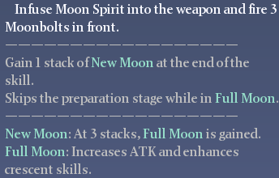 | 7 | 3 swings of single projectiles straight ahead(Low average damage)(Melee?) | |
| Radiance | Epic | 10 | 3 Moving AOEs that deal constant dot while enemies are inside projectile (move and then stay in place in 3 directions)(Decent damage if they happen to be at right spot) (Melee?) | ||
| Sword Will | Epic | 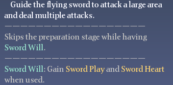 | ? | Close Range AOE targeting nearby targets for multiple hits(about 4-5 hits?)(includes nearby targets in air)(Melee) | Animation time of cast: Somewhere between 1.5 seconds and 3 seconds |
| Chain Lightning | Epic | ? | Fires 4 projectiles from above target location that deal good damage.(Ranged) | ||
| Stone Crush | Epic | | 10 | (Melee) | Only short distance towards ground.(Slower than Moonrend) |
| Subdue | Epic | ? | (SelfBuff)Subdue gives buff until hit or duration ends |
| Name | Grade | Egg Rarity | Max ATK Q | Max HP Q | Max DEF Q | Attack Descriptions | Default Movement Restrictions(Ground/Air/Water) | Notes |
|---|---|---|---|---|---|---|---|---|
| Child Carnivore Bloom | Child | Rare | 52 | 48 | 52 | 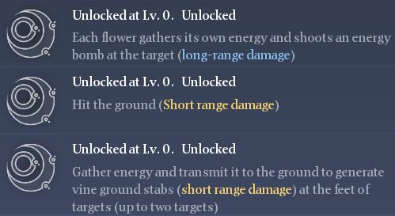 | Ground | |
| Grand Carnivore Bloom | Grand | Epic | 62 | 58 | 60 | 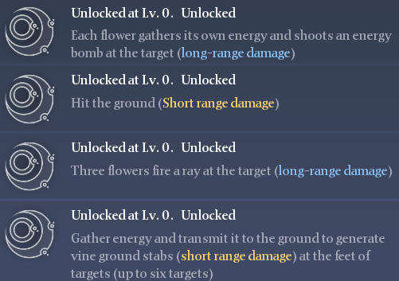 | Ground | |
| Young Velociraptor | Young | Epic | 60 | 54 | 60 | 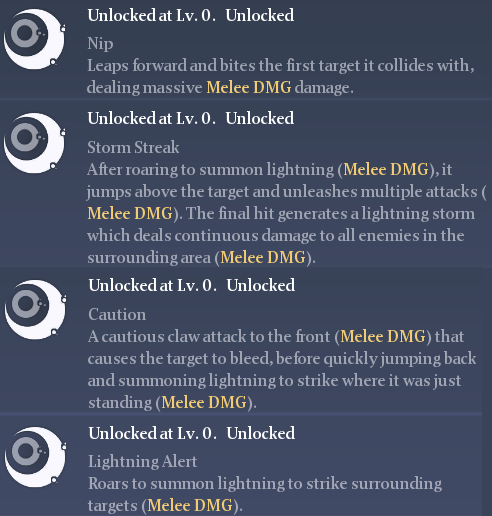 | Ground | |
| Noble Velociraptor | Noble | Legendary | 7266 | 72 | 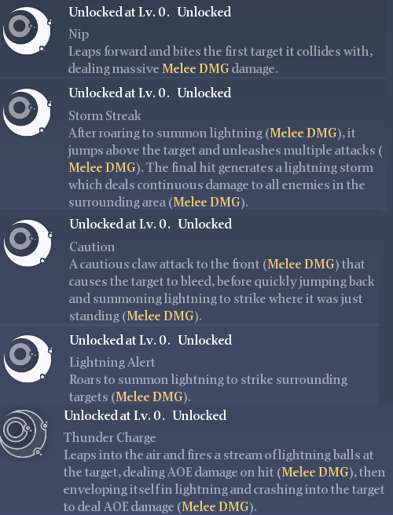 | Ground | ||
| Child Whitefox | Child | Rare | 52 | 56 | 44 | Ground/Air | ||
| Grand Whitefox | Grand | Epic | 62 | 66 | 54 | Ground/Air | Seems to have faster flight than condor/kuntur. | |
| Giant Whitefox | Noble | Legendary | 72 | 76 | 64 | 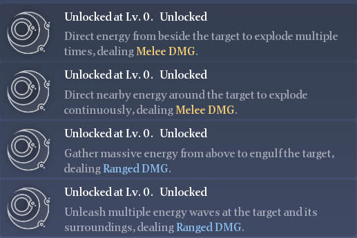 | Ground/Air | |
| Ascending Drune | Noble | Legendary | 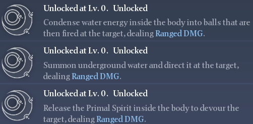 | Ground/Air/Water | Slow swim speed in comparison to squid |
| Name | Grade | Egg Rarity | Max ATK Q | Max HP Q | Max DEF Q | Attack Descriptions | Default Movement Restrictions(Ground/Air/Water) | Notes |
|---|---|---|---|---|---|---|---|---|
| Grand Stappo | Grand | Epic | 60 | 58 | 56 | 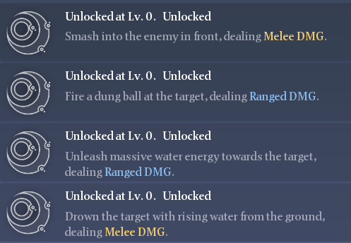 | Ground | |
| Platyzard | Common | Rare | 58 | 55 | 53 | Ground/Water | ||
| Kuntur | Grand | Epic | 60 | 65 | 55 | 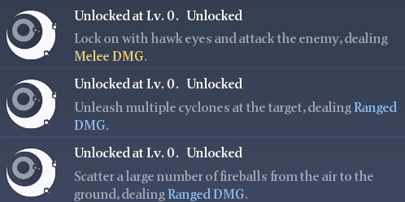 | Ground/Air | Non-hover based flight. |
| Ice Batoff | Noble | Legendary | 71 | 72 | 68 | 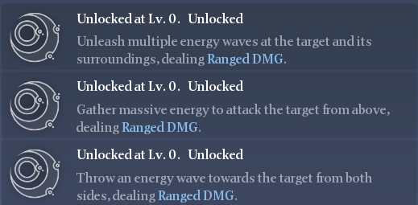 | Ground/Air | Attack visuals are ice themed varients of Scale batoff attacks(ice spear and ice storm attacks). Batoffs have hover based flight. |
| Yellow Batoff | Grade | Epic | Ground/Air | Slightly more quality max total vs Scale batoff | Piscertus | Grand | Epic | 61 | 56 | 64 | 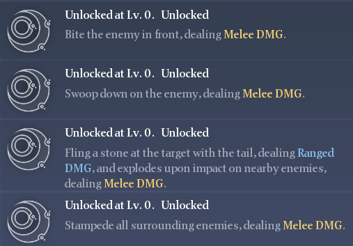 | Ground/Water |
| Amount needed to feed soil for all but middle block of level 2 Fert. Sprinkler of level 4 soil:about 24 |
|---|
| Amount needed to feed soil for all but middle block of level 2 Fert. Sprinkler of level 5 soil:about 48 |